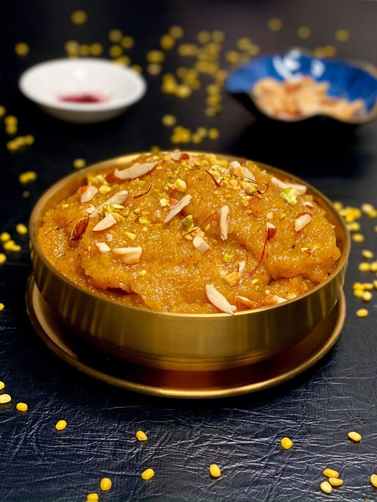

Gulab Jamun

Ingredients
- 1 cup Milk Powder
- ¼ cup All-purpose Flour (Maida)
- 2 tbsp Ghee
- ½ tsp Baking Soda
- Milk (as needed for dough)
- Oil or Ghee (for frying)
- For Sugar Syrup:
- 1½ cups Sugar
- 1½ cups Water
- 4 Cardamom Pods
- 1 tsp Rose Water or a few Saffron Strands
Instructions
- Mix milk powder, flour, baking soda, and ghee. Add milk slowly to make a soft dough.
- Make smooth balls without cracks. Heat oil and fry on low heat until golden brown.
- For syrup: Boil water, sugar, and cardamom until slightly sticky. Add rose water.
- Soak fried gulab jamuns in warm syrup for at least 1 hour before serving.
Rice Kheer

Ingredients
- ½ cup Basmati Rice
- 1 liter Full Cream Milk
- ½ cup Sugar
- ¼ tsp Cardamom Powder
- 10-12 Cashews
- 10-12 Raisins
- A few Saffron Strands (optional)
- 2 tsp Ghee
Instructions
- Wash and soak rice for 30 minutes. Drain and keep aside.
- Boil milk in a heavy pan. Add soaked rice and cook on low heat, stirring occasionally.
- When rice is soft and milk thickens, add sugar, cardamom, saffron (optional), and cook for 5 more minutes.
- Fry cashews and raisins in ghee and add to the kheer. Serve warm or chilled.
Sooji Halwa

Ingredients
- 1 cup Semolina (Sooji/Rava)
- ¾ cup Sugar
- 3 cups Water
- 4 tbsp Ghee
- ¼ tsp Cardamom Powder
- 10 Cashews
- 10 Raisins
- A few Saffron Strands (optional)
Instructions
- Heat ghee in a pan. Roast cashews and raisins until golden. Remove and keep aside.
- In the same ghee, roast semolina on medium heat until aromatic and light golden.
- In a separate pan, boil water with sugar and saffron.
- Slowly add sugar water to roasted semolina while stirring continuously.
- Cook until mixture thickens. Add cardamom, fried dry fruits, and mix well. Serve warm.